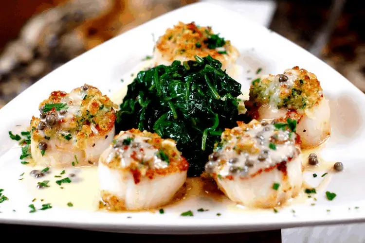

Pan-Seared Scallops Recipe - Gordon Ramsay

Ingredients
- 2 large sea scallops 10/20 ct.
- 8 tbsp (1 stick) butter, soft melt
- 3/4 cup panko jap breadcrumbs
- 1/4 cup grated parmesan cheese
- 1/2 tsp ground black pepper
- 1/2 tsp garlic salt
- 2 tbsp fresh chopped Italian flat-leaf parsley
- 1 lemon, zested and cut into 1/4 wedges
Ingredients - Sautéed Spinach
- 2 tbsp olive oil
- 1 tbsp butter
- 1 shallot, minced
- 1 clove garlic
- 1 lb. baby spinach
- 1/4 tsp Kosher salt to taste
- 1/4 tsp ground black pepper to taste
Ingredients - Lemon Butter Caper Sauce
- 1/4 tsp Kosher salt to taste
- 1/4 tsp cracked black pepper, to taste
- 1/2 tsp dried thyme leaves
- 4 tbsp unsalted butter
- 1 very small shallot, minced (1 tbsp)
- 2 garlic cloves, minced (1 tbsp)
- 2 tsp all-purpose flour
- 1 cup dry white wine
- 1 1/2 cup chicken stock, homemade/low-sodium
- 2 tbsp drained capers
- 2 tbsp minced fresh parsley
- 1 tsp freshly grated lemon zest, 2 tbsp juice
Preparation Method
Scallops
- Preheat the oven to 450°F. Delicately coat a large-sized rimmed baking sheet pan with non-stick cooking spray.
- Raise the sea scallops and pat dry with paper towels. Put the sea scallops in a large-sized bowl with 6 Tbsp. of the soft melted butter. Toss to coat equally.
- Blending the panko bread crumb with Parmesan, black pepper, garlic salt, and chopped Italian flat-leaf parsley in a large shallow bowl and mix well.
- Roll and coat every sea scallop in the panko parmesan breading mix and position on the baking sheet pan.
- Bake the sea scallops for 10 minutes, then remove from the oven preheat your broiler.
- Spoon the tops of each scallop lightly with any leftover breading and drizzle with the leftover 2 Tbsp of butter.
- Now broil the sea scallops about 4 in. away from the broiler heat source about 3 to 5 minutes, or until the tops of the sea scallops are nicely golden brown and crispy.
- Sparkle sea scallops with additional parsley, lemon zest, and serve with ¼ wedged lemons.
Sautéed Spinach
- In a large sauté pan, heat the olive oil and butter over medium heat.
- Add the shallot and cook until tender, about 3 minutes.
- Add the spinach and cook, tossing to coat, until the spinach is wilted.
- Season to taste with salt and pepper.
Lemon Butter Caper Sauce
- Melt 2 Tbsp. of butter in it over medium heat until sizzling.
- Now add the garlic and shallot, sauté them until soften, lowering the heat if needed, almost for 1 minute.
- Sprinkle flour in pan, cook, stirring, for additional 2 more minutes.
- Now whisk in the dry wine and the chicken stock, bring the heat up heat to high, and till the liquid begins to boil, make sure to scrape browned bits from the bottom of the saucepan.
- Lower the heat to medium-high continues to cook without a lid until it’s reduced by ½ in about 7 to 10 minutes.